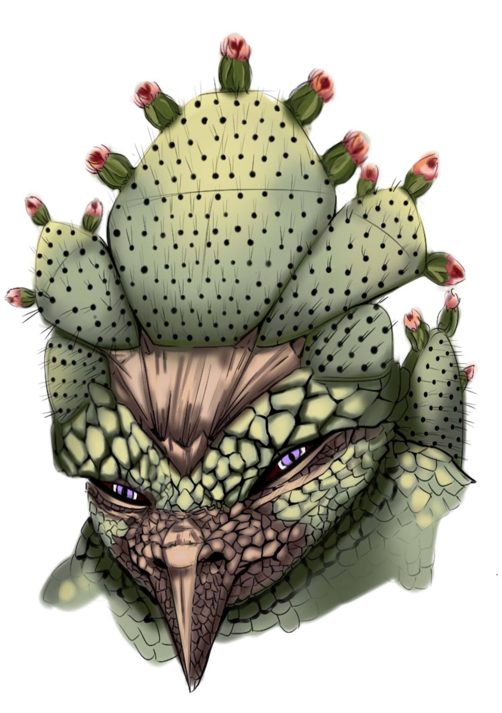
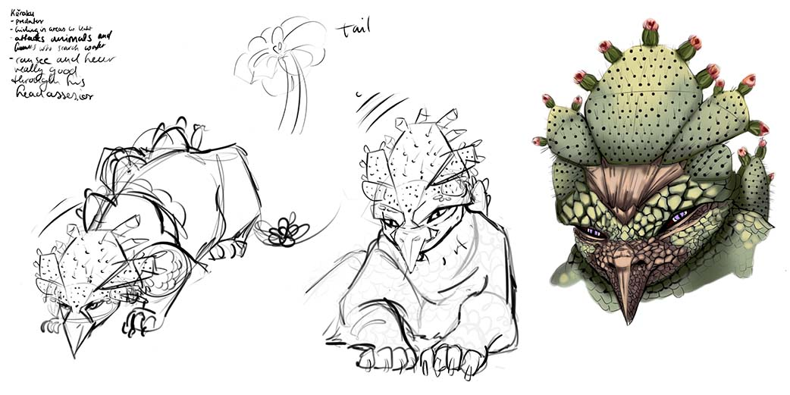
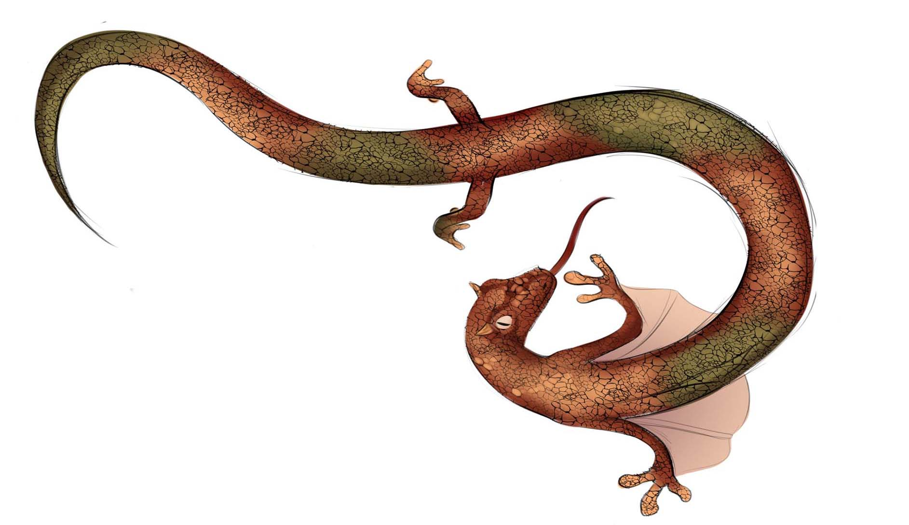
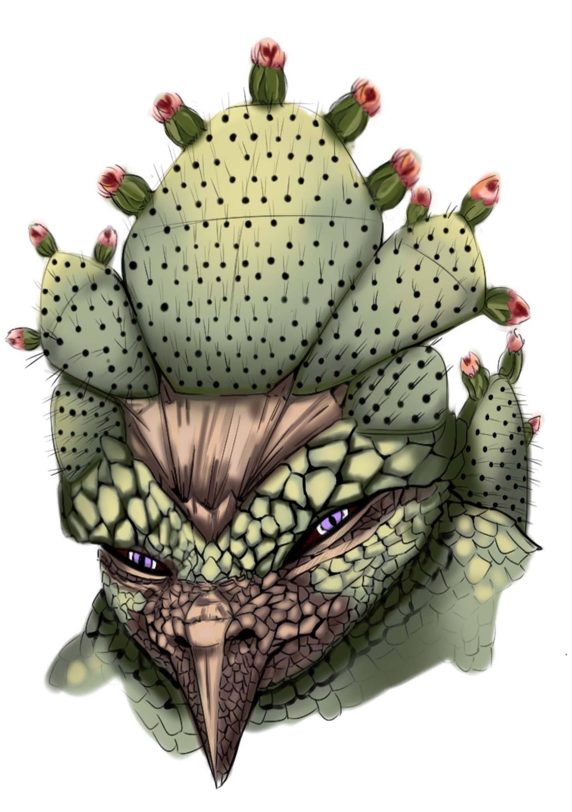
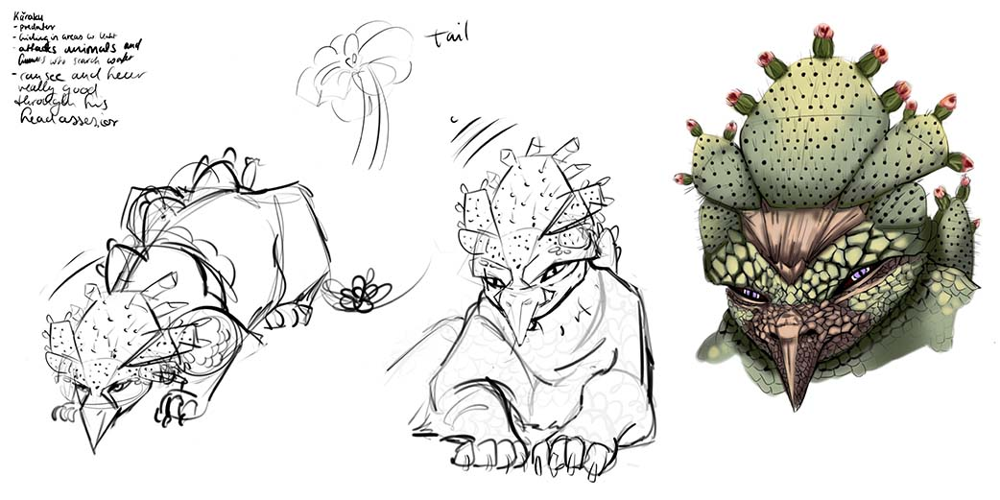
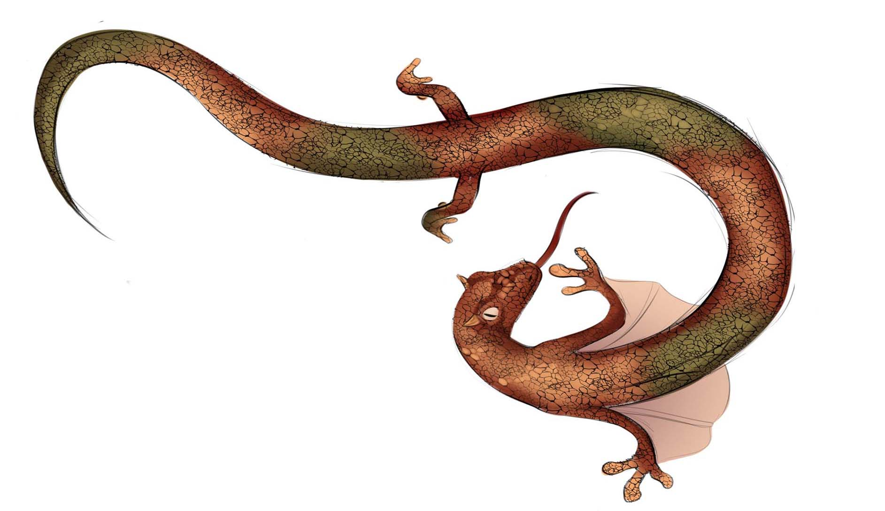

ARTWORK
Character Design & Creatures

 





Portraits of students from different countries in the world. Digital drawing is one of my strengths. Especially the quick display of portraits. Here I drew in grayscale and color different students of the world. Next you'll see some Concept Art for creatures in sketches and color. Using some inspiration from plants and the different types of enviroments I created those creatures. The green giant beast was inspired by a cactus, lion and a eagle. The lizard was created during a drawing session. We had interesting pictures about an rock formation in America. I thougth about a giant, flying and crawling lizard, who sit aside such a crazy rock formation waiting for their bait.